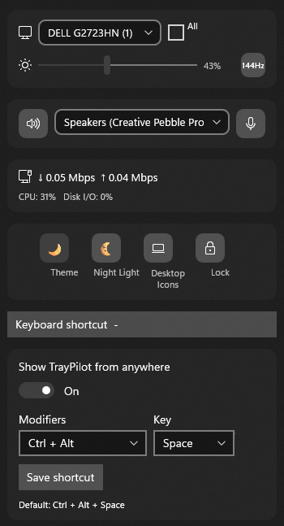

01 / DISPLAY
Make the picture yours
Adjust supported monitor brightness and cycle available refresh rates. Monitor discovery keeps connected displays in view.
DDC/CI and device support varyA calmer way to steer Windows
Displays, audio, network activity, and quick settings. One considered little dashboard, ready from your system tray.

Less hunting through menus.
More getting on with it.
Small, repeatable Windows tasks shouldn’t send you opening a maze of settings. TrayPilot gathers useful controls in one lightweight flyout, close to where you already work.
A little dashboard, a lot less friction
Open TrayPilot from the notification area or use your keyboard shortcut. Your current task stays right where you left it.
Adjust supported monitor brightness and cycle available refresh rates. Monitor discovery keeps connected displays in view.
DDC/CI and device support varyPick a playback device and reach speaker or microphone mute controls from the same compact place.
Local Windows audio endpointsCheck aggregate download and upload throughput at a glance, read from local network adapter counters.
No packet inspectionReach theme, Night Light, power mode, desktop icons, and PC lock actions from your tray flyout.
Uses the Windows settings available on your PCA shortcut back to your flow
Click the tray icon or bring TrayPilot forward with a configurable global keyboard shortcut. Choose a supported combination that suits your setup; changes are saved locally.

A local-first Windows utility
No TrayPilot account. No cloud dashboard. No telemetry. TrayPilot reads local device information needed for its controls, and keeps settings and diagnostic logs on your device.
Read the privacy policyGood questions
Quick, plain answers about TrayPilot's features, requirements, and privacy.
TrayPilot is a Windows 11 system tray dashboard that brings supported monitor brightness controls, audio device switching and mute controls, live network adapter throughput, and selected Windows quick settings into one compact flyout.
No. TrayPilot targets Windows 11 version 22H2 (build 22621) or later.
No account is required, and TrayPilot has no telemetry or cloud service. It reads local system information for its controls; settings and diagnostic logs stay on your device. See the full privacy policy.
External monitor brightness depends on DDC/CI support across the monitor, connection, adapter, and graphics driver. Some supported laptop panels can use a Windows brightness fallback. Hardware support varies.
No. It reads local network adapter byte counters to estimate aggregate download and upload throughput. It does not inspect packet contents.
Per-application audio routing and changing HDR state are not included. TrayPilot can switch audio endpoints, control speaker and microphone mute, and show HDR capability and state as read-only information.
Launch TrayPilot and open its flyout from the system tray icon, or press its global keyboard shortcut. The default shortcut is Ctrl + Alt + Space; supported combinations can be changed in the flyout.
Find your way back to flow
Explore TrayPilot on the Microsoft Store.
View TrayPilot in Store For Windows 11. Feature support depends on your device.